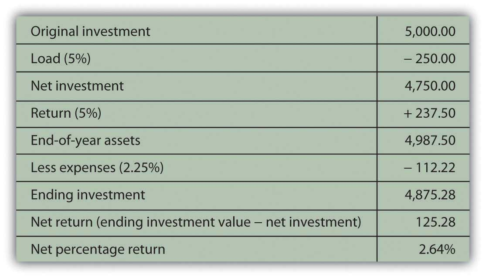

As defined in the Chapter 12 "Investing", a mutual fund is a portfolio of securities, consisting of one type of security or a combination of several different types. A fund serves as a convenient way for an investor to have a diversified portfolio of investments in just about any investable asset. The oldest mutual fund is believed to have been founded by Adriaan van Ketwich in 1774. Ketwich invited investors to contribute to a trust fund to spread the risk of investing in foreign bonds. The idea moved from the Netherlands to Scotland to the United States, where the Boston Personal Property Trust established the first mutual fund in 1893.FinanceScholar.com, http://www.financescholar.com/history-mutual-funds.html (accessed June 15, 2009).
The mutual fund’s popularity has grown in periods of economic expansion. At the height of the stock market boom in 1929, there were over seven hundred mutual funds in the United States. After 1934, mutual funds fell under the regulatory eye of the Securities and Exchange Commission (SEC), and it wasn’t until the 1950s that there were once again over one hundred mutual funds in the United States.
Mutual funds multiplied in the 1970s, spurred on by the creation of IRAs and 401(k) retirement plans, and again in the 1980s and 1990s, inspired by economic growth and the tech stock boom. By the end of 2008, U.S. mutual funds—which account for just over half of the global market—had $9.6 trillion in assets under management. Forty-five percent of all U.S. households owned mutual funds, compared to 6 percent in 1980. For 69 percent of those households, mutual funds were more than half of their financial assets.The Investment Company Institute, 2009 Investment Company Fact Book, 49th ed., 2009, http://www.ici.org/pdf/2009_factbook.pdf (accessed June 15, 2009). Mutual funds play a significant role in individual investment decisions.
A mutual fund provides an investor with cheaper and simpler diversification and security selection, requiring only one transaction to own a diversified portfolio (the mutual fund). By buying shares in the fund rather than individual securities, you achieve extensive diversification for a much lower transaction cost than by investing in individual securities and making individual transactions. You also receive the benefit of professional security selection, which theoretically minimizes the opportunity costs of lesser choices. So by using a mutual fund, you get more and better security selection and diversification.
A mutual fund also provides stock and bond issuers with a mass market. Rather than selling shares to investors individually (and incurring the costs of doing so), issuers can more easily find a market for their shares in mutual funds.
Like stocks and bonds, mutual funds may be actively or passively managed. As you read in Chapter 15 "Owning Stocks" and Chapter 16 "Owning Bonds", actively managed funds provide investors with professional management and the expected research, analysis, and watchfulness that goes with it. Passively managed index fundsA mutual fund designed to track the performance of an index for investors who seek diversification without having to select securities., on the other hand, are designed to mirror the performance of a specific index constructed to be representative of an asset class. Recall, for example, that the Standard & Poor’s (S&P) 500 Index is designed to mirror the performance of the five hundred largest large cap stocks in the United States.
Mutual funds are structured in three ways:
Closed-end fundsA mutual fund that issues a limited number of shares, so that existing shares must be sold to new investors. are funds for which a limited number of shares are issued. Once all shares have been issued, the fund is “closed” so a new investor can only buy shares from an existing investor. Since the shares are traded on an exchange, the limited supply of shares and the demand for them in that market directly determines the value of the shares for a closed-end fund.
Most mutual funds are open-end fundsA mutual fund in which shares are bought from and sold to the fund management; the number of shares is not limited. in which investors buy shares directly from the fund and redeem or sell shares back to the fund. The price of a share is its net asset value (NAV)When used regarding open-end mutual funds, NAV refers to the redeemable value of each fund share at that time, given the market value of the fund’s assets and the number of shares outstanding., or the market value of each share as determined by the fund’s assets and liabilities and the number of shares that exist. Here is the basic formula for calculating NAV:
NAV = (market value of fund securities − fund liabilities) ÷ number of shares outstanding.Demand for shares is reflected in the number of shares outstanding, because the fund can create new shares for new investors. NAV calculations are usually done once per day at the close of trading, when mutual fund transactions are recorded.
The NAV is the price that the fund will pay you when you redeem your shares, so it is a gauge of the shares’ value. It will increase if the market value of the securities in the fund increases faster than the number of new shares.
Exchange-traded funds (ETFs)A mutual fund that is structured as a closed-end fund and actively traded on an exchange. are structured like closed-end funds but are traded like stocks. Shares are traded and priced continuously throughout the day’s trading session, rather than once per day at the end of trading. ETFs trade more like individual securities; that is, if you are trying to time a market, they are a more nimble asset to trade than open-end or closed-end funds.
Originally designed as index funds, exchange-traded funds now target just about every asset, sector, and economic region imaginable. Because of this, ETFs have become quite popular, with over $529 billion invested in over seven hundred funds (as of April 2009).The Investment Company Institute, 2009 Investment Company Fact Book, 49th ed., 2009, http://www.ici.org/pdf/2009_factbook.pdf (accessed June 15, 2009). Figure 17.2 "Fund Features" compares the features of closed-end funds, open-end funds, and ETFs.
Figure 17.2 Fund Features

Shares of closed-end funds and exchange-traded funds are bought and sold on exchanges, much like shares of stock. You would go through a broker to make those transactions. Shares of open-end funds may be bought and sold directly from the fund sponsor, a mutual fund company or investment manager such as Fidelity, Vanguard, Janus, T. Rowe Price, or Teachers Insurance and Annuity Association-College Retirement Equities Fund (TIAA-CREF). You can make those transactions at any of the company’s offices, by telephone, or online. About 40 percent of all mutual fund transactions are done directly (without a broker) through a retirement plan contribution or a mutual fund company.The Investment Company Institute, 2009 Investment Company Fact Book, 49th ed., 2009, http://www.ici.org/pdf/2009_factbook.pdf (accessed June 15, 2009).
Some other types of mutual funds are shown in Table 17.1 "Other Types of Mutual Funds". Some research companies, such as Morningstar, track as many as forty-eight different categories of mutual funds.
Table 17.1 Other Types of Mutual Funds
| Funds of fundsA mutual fund that invests in shares of other mutual funds rather than in specific securties. | Mutual funds that own shares in other mutual funds rather than in specific securities. If you decide to use mutual funds rather than select securities, a fund of funds will provide expertise in choosing funds. |
| Lifestyle fundsA mutual fund designed to perform asset allocation and security selection for the investor. Assets are reallocated based on the firm’s expected liquidity target date. | Funds of stocks and bonds that manage portfolio risk based on age or the time horizon for liquidity needs. Lifestyle funds perform both security selection and asset allocation for investors, determined by the target date. For example, if you were now thirty years old, you might choose a lifestyle fund with a target date of thirty-five years from now for your retirement savings. As the fund approaches its target date, its allocation of investments in stocks and bonds will shift to carry less risk as the target nears. Lifestyle funds are used primarily in saving for retirement; many are created as funds of funds. |
| Leveraged fundsA mutual fund that invests borrowed funds as well as investors’ funds. | Funds that invest both investors’ money and money that the fund borrows to augment the investable assets and thus potential returns. Because they use borrowing, leveraged funds are riskier than funds that do not use leverage. |
| Inverse fundsA mutual fund that aims to increase in value when the market declines, in contrast to an index fund, which aim to increase in value when the market rises. | Funds that aim to increase in value when the market declines, to be countercyclical to index funds, which aim to increase in value when the market rises. Inverse funds, also called bear funds, are set up to perform contrary to the index. Since most economies become more productive over time, however, you can expect indexes to rise over time, so an inverse fund would make sense only as a very short-term investment. |
All funds must disclose their fees to potential investors: sales fees, management fees, and expenses. A load fundA mutual fund that charges a sales commission or fee upon investment or purchase of shares; the load is stated as a percentage of invested funds. charges a sales commission on each share purchase. That sales charge (also called a front-end loadThe sales charge for mutual fund shares, quoted as a percentage of the funds invested; it cannot be more than 8.5 percent of investment.) is a percentage of the purchase price. A no-load fundA mutual fund that does not charge a sales commission or fee upon investment or purchase of shares., in contrast, does not charge a sales commission, because shares may be purchased directly from the fund or through a discount broker. The front-end load can be as much as 8.5 percent, so if you plan to invest often or in large amounts, that can be a substantial charge. For example, a $5,000 investment may cost you $425, reducing the amount you have to invest and earn a return.
A fund may charge a back-end loadA deferred sales charge or sales fee charged when shares are redeemed., actually a deferred sales charge, paid when you sell your shares instead of when you buy them. The charge may be phased out if you own the shares for a specified length of time, however, usually five to seven years.
A fund may charge a management fee on an annual basis. The management fee is stated as a fixed percentage of the fund’s asset value per share. Management fees can range from 0.1 percent to 2.0 percent annually. Typically, a more actively managed fund can be expected to charge a higher management fee, while a passively managed fund such as an index fund should charge a minimal management fee.
A fund may charge an annual 12b-1 feeAn annual management fee charged to mutual fund shareholders and calculated as a percentage of the assets under management. or distribution fee, also calculated as not more than 1.0 percent per year of the fund’s asset value. Some mutual funds charge other extra fees as well, passing on fund expenses to shareholders. You should consider fee structure and rate when choosing mutual funds, and this can be done through calculations of the expense ratio.
Taken together, the annual management, distribution, and expense fees are measured by the expense ratioThe total expenses of a mutual fund investment as a percentage of share value.—the total annual fees expressed as a percentage of your total investment. The expense ratio averages around 0.99 percent for all mutual funds, but it may be more than 2 percent of your investment’s value.The Investment Company Institute, 2009 Investment Company Fact Book, 49th ed., 2009, http://www.ici.org/pdf/2009_factbook.pdf (accessed June 15, 2009). That may not sound like much, but it means that if the fund earns a 5 percent return, your net return may be less than 3 percent (and after taxes, it’s even less). When choosing a fund, you should be aware of all charges—especially annual or ongoing charges—that can affect your investment return.
Say you invest in a load fund with a 5 percent front-end load and an expense ratio of 2.25 percent and suppose the fund earns a 5 percent return. Figure 17.3 "Mutual Fund Example" shows how your $5,000 investment would look after one year.
Figure 17.3 Mutual Fund Example
Expenses can be a significant determinant of your net return, and since expenses vary by fund, fund strategy (active or passive), and fund sponsor, you should shop around and understand what your costs of investing will be.
Owning shares of a mutual fund means owning shares in a pool of assets. The returns of the fund are the returns of those assets: interest, dividends, or gains (losses). Income may come from interest distributionsMutual fund returns from any interest payments on the mutual fund holdings, such as bonds if the fund invests in bonds or interest-producing assets or as dividend distributionsMutual fund returns from any dividends distributed by mutual fund equity holdings. if the fund invests in stocks.
Mutual funds buy and sell or “turn over” the fund assets. Even passively managed funds need to rebalance to keep pace with their benchmarks as market values change. The turnover ratioA measure of how much annual trading activity there is within a mutual fund’s holdings. is the percentage of fund assets that have been turned over or replaced in the past year, a measure of the fund’s trading activity.
Turnover can create capital gains or losses. Periodically, usually once per year, the fund’s net capital gains (or losses) are distributed on a per share basis as a capital gains distributionThe shareholder’s share of capital gains (losses) created by mutual fund turnover.. You would expect turnover to produce more gains than losses. The more turnover, or the higher the turnover ratio, the greater the capital gains distributions you may expect.
Unless you have invested in a tax-exempt savings plan such as an Individual Retirement Account (IRA) or a 401(k), interest and dividend distributions are taxable as personal income, as are capital gains, including capital gains distributions. A higher turnover ratio may mean a higher tax expense for capital gains distributions. Most open-end mutual funds allow you the option of having your income and gains distributions automatically reinvested rather than paid out, which means that you may be paying taxes on earnings without ever “seeing” the money.
All mutual fund companies must offer a prospectusA written statement of a mutual fund’s structure, management, investment objectives, holdings, and historic and current performance; funds are required to make the prospectus available to all potential investors., a published statement detailing the fund’s assets, liabilities, management personnel, and performance record. You should always take the time to read it and to take a closer look at the fund’s investments to make sure that the fund will be compatible and appropriate to your investment goals.
For example, suppose you have an investment in an S&P 500 Index fund and now are looking for a global stock fund to complement and diversify your holdings in domestic (U.S.) equities. You go to the Web site of a large mutual fund company offering hundreds of funds. You find a stock fund called “Global Stock Fund”—sounds like it’s just what you are looking for. Looking closer, however, you can see that this fund is invested in the stocks of companies in Germany, Japan, and the United Kingdom. While they are not U.S. stocks, those economies are similar to the U.S. economy, perhaps too similar to provide the diversity you are looking for.
Or suppose you are looking for a bond fund to create income and security. You find a fund called the “Investment Grade Fixed Income Fund.” On closer inspection, however, you find that the fund does not invest only in investment grade bonds but that the average rating of its bonds is investment grade. This means that the fund invests in many investment grade bonds but also in some speculative grade bonds to achieve higher income. While this fund may suit your need for income, it may not be appropriate for your risk tolerance.
Mutual fund companies make this information readily available on Web sites and in prospectuses. You should always make the extra effort to be sure you know what’s in your fund. In addition, mutual funds are widely followed by many performance analysts. Ratings agencies such as Morningstar and investment publications such as Barron’s and Forbes track, analyze, and report the performance of mutual funds. That information is available online or in print and provides comparisons of mutual funds that you may find helpful in choosing your fund.
In print and online newspapers, mutual fund performance is reported daily in the form of tables that compare the average returns of funds from week to week. Reported average returns are based on the net asset value per share (NAVPS). Investors can use this information to choose or compare funds and track the performance of funds they own.
In conclusion, since a mutual fund may be made up of any kind or many kinds of securities (e.g., stocks, bonds, real estate, and commodities), it is not really another kind of investment. Rather, it is a way to invest without specifically selecting securities, a way of achieving a desired asset allocation without choosing individual assets.
The advantages of investing in a mutual fund are the diversification available with minimal transaction costs and the professional management or security selection that you buy when you buy into the fund.
Compared to actively managed funds, passively managed or index funds offer similar diversification but with lower management fees and expense ratios because you aren’t paying for market timing or security selection skills. The turnover ratio shows how passive or active the fund management is. About half of all equity mutual funds have a turnover ratio of less than 50 percent.The Investment Company Institute, 2009 Investment Company Fact Book, 49th ed., 2009, http://www.ici.org/pdf/2009_factbook.pdf (accessed June 15, 2009).
Performance history has shown that actively managed funds, on average, do not necessarily outperform passively managed funds.Burton G. Malkiel, A Random Walk Down Wall Street (New York: W. W. Norton & Company, Inc., 2007), 360. Since they usually have higher fees, any advantage created by active management is usually canceled out by their higher costs. Still, there are investors who believe that some mutual funds and mutual fund managers can, on average, outperform the markets or the indexes that provide the benchmarks for passively managed funds.
Mutual funds provide investors with
Mutual funds may be structured as
Some funds are structured to achieve specific investment goals:
Mutual fund costs may include
Fees vary by
Returns from a mutual fund include returns on the securities it owns, including